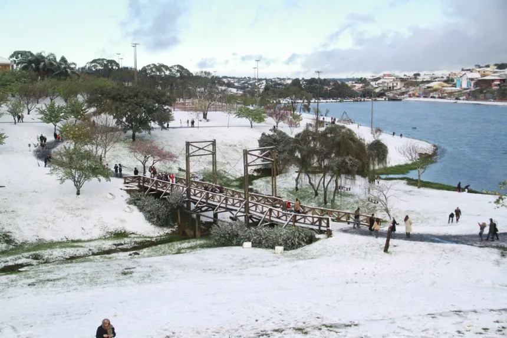

Caderno de lugares
Parte I / 01
Paraná · Sul do Brasil
Guara-puava
Em Guarapuava, o inverno tem presença. O frio intenso veste a cidade de geada e, em ocasiões raras, de neve — um espetáculo breve que transforma a paisagem e fica na memória.

Inverno em Guarapuava